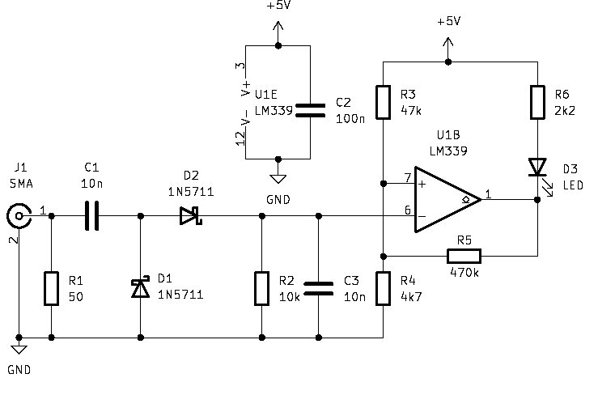

As part of another circuit I’m trying to design, I would like to have a high impedance detection of whether there is RF on the wire (this would be for a lab 10MHz distribution amp). I believe the following circuit should do:

After the 50-ohm load (for the experiment, not for the final design, just to terminate the signal generator in the testing), there are two Schottky diodes to rectify the signal, and then (R2,C3) filter the output into the comparator negative input. If we start from a low RF level state, the rectified RF is compared to a voltage of \(4.7/(4.7+47) \cdot 5V = 0.45V\). That corresponds to around 3 dBm.
When the RF is lower, the positive input is higher, and the comparator lets its output go high, and there is no voltage to light the LED. But when the rectified RF goes above 3 dBm, the comparator opens the collector, and there is sufficient voltage to light the LED. Now R5 is also almost paralleled with R4, pulling the positive reference input towards ground (except for \(V_{CE}\) of the output transistor of the comparator). That provides some hysteresis in the detection of RF by the LED.
I built the circuit on one of the prototyping boards I had JLCPCB made from the Gerber files that Ryan Flower, W7RLF, have made available:
Picture of built prototype board.
All the diamond shapes on the board are connected to a ground plane on the back side of the board. The LM339 (the only comparator I had around in a DIP package) is superglued dead-bug style to the board. After fixing a bad solder joint, I could make the following measurements, using my HP signal generator for fine power adjustments:
| Frequency (MHz) | Turn on (dBm) | Turn off (dBm) |
|---|---|---|
| 1 | 3.1 | 2.7 |
| 5 | 3.4 | 3.0 |
| 10 | 3.4 | 3.0 |
| 20 | 3.6 | 3.1 |
| 30 | 4.2 | 3.8 |
So this is more or less as the calculations implied, so this must count as some success. There seems to be some additional attenuation at higher frequencies, with higher power needed to turn the LED on. I measure the relevant voltages to see if my hypotheses were correct: